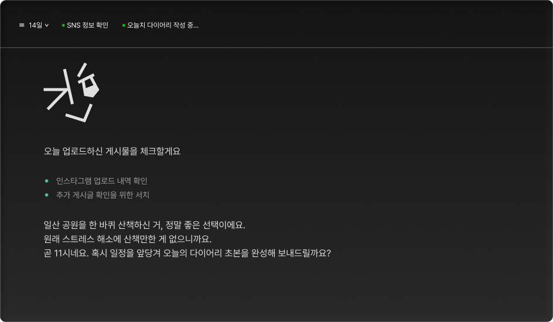
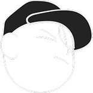

- 말하면
- 나의
- K

- 기록되는
- 하루
- E J
다이어리는 안 쓰지만, 매일 SNS에 들어가 게시글이나 반응을 남기진 않으신가요?
SNS 연계 연결을 통해 파편화된 정보를 모아 다이어리를 작성할게요.

자동화 다이어리
하루 정해진 시간에 다이어리를 완성해 보냅니다. 또한 설정한 루틴에 따라 알람을 발송합니다.
엄중한 정보 관리
외부로 발설되거나 서버에 다로 저장되지 않고 로컬 파일로 저장됩니다. 민감한 개인정보는 암호화를 거쳐요.
심층적인 감정 분석
시간별로 느낀 감정의 흐름을 따라가요. 사용자의 희노애락을 체크하고 균형을 위한 피드백을 형성해요.
마음 정리와 발전을 위한
단계 세우기
K는 다이어리 작성에만 도움을 주지 않습니다.
미래를 만들어나가기 위한 여정을 함께 만듭니다.
일지 작성
AI의 도움으로
간단하게 일지를
작성할 수 있습니다.
감정 정제
일과를 기록하며
감정적 문제의 해결
실마리를 전달합니다.
미래 계획
기록을 바탕으로 미래를
더 나은 방향으로
설계하여 전달합니다.
계획 실천
계획을 바탕으로
실천하며 미래를 만듭니다.
우리는 이야기를 원동력으로 발전합니다
-
우리는 모두 어느새 스스로를 돌보길 포기한 것처럼 보여요. 알잖아요. 테무나 아마존에서 충동 구매하는 건 스스로를 위한 길이 아니라는 걸. KEJ는 그런 사람들을 위해 존재하는 거 같아요. 거울을 보게 해주는 거죠.
.jpg) 마스크라인 @mask-line
마스크라인 @mask-line -
계속 나아가기 위한 조건은 다음과 같아요. 우리는 우리가 가진 본질적인 문제를 알아야 한다는 거죠. 우울감에 사로 잡히며 시간을 버리고 싶지 않고, KEJ는 이해를 해요.
.jpg) 블루하와이 @blue-hawaii
블루하와이 @blue-hawaii -
살면서 하고 싶은 말 참 많잖아. 그런데 이제는 내 인생에도 대외비가 있어 ㅋㅋ 아무에게나 말 못하는 그런 거... 그래서 필요한 거 같아.
.jpg) 쏘쏘 @so-so
쏘쏘 @so-so -
쓸만하다는 말로는 부족해. 나는 구독 티어로 올리고 쓰고 있는데 나쁘지 않아. 그리고 친구들에게 정제된 말로 일기를 공유할 수 있다는 게 고마워. 그전까지의 교환 일기는 솔직히 X에 올리는 게시글과 다름 없었거든...
.jpg) 캐롤라인 @caroline-01-31
캐롤라인 @caroline-01-31 -
이 어플은 정신과 의사보다 나를 더 정확하게 진단해주는 거 같아. 그냥 약 처방해주고 끝나는 정신병 의사와는 차원이 다른... 정밀함? 아무튼 그런 걸 느끼고 있어. 나는 얘와 대화하고 오늘 하루를 기록하면서 꽤 건겅해졌어. 진짜 농담 아니라 건강해졌다고.
.jpg) 런던행열차 @rkefuis-ric-13
런던행열차 @rkefuis-ric-13
1,204개
기본커스텀
964개
프리미엄커스텀
다양한 스타일로 K씨의
이미지를 커스텀해요.
